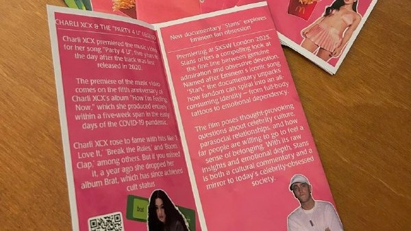

Spill the Tea calls itself the most comfortable English club in Moscow, and the little booklets the hosts print for the table say the same thing in two words — comfort english community. You come to meet new people, talk about untypical topics and have a good evening. ☕
A meeting opens with introductions and a look at the topic all together, then the hosts walk everyone through the vocabulary they prepared for you. After that you spend almost the whole meeting talking in mini-groups of 2–3 people, which the hosts reshuffle as you go, so you end up speaking with most of the room. The questions are written in advance — nobody sits there wondering what to say next.
The topics are deliberately not school topics: where envy comes from, consumer culture and impulse buying, influencers and TikTok trends, guilty pleasures, the most toxic couples on screen. Most meetings finish with a game or a short debate, so the new words actually get used. Your first visit is free.
Our Format
Format: a hosted speaking club with one topic per meeting — a warm-up together, then small groups that keep changing, then a game or a debate to close.
- ☕ Mini-groups of 2–3 — reshuffled during the meeting, with a prepared list of questions for every round
- ☕ Vocabulary first — the hosts send an advanced word list and a Quizlet set to everyone who signs up, so you learn the words before the meeting and use them live
- ☕ A game or a debate at the end — Alias with the new words, Red & Green Flags, Guess Who I Am, Detective, Mafia, Spyfall, Imaginarium, Contact
- ☕ First visit free — see whether it suits you before you pay for anything
💬 Topics from past seasons: "The Phenomenon of Envy", "Consumer Culture", "Guilty Pleasures", "Autumn Rituals and Autumn Anxiety", "Toxic Relationships on Screen", "FOMO", "Red & Green Flags", "Spring Fever".
Where we meet
Spill the Tea grew up offline, in Moscow cafés, and moved online in the spring of 2026 — swapping Thursday evenings for Sunday. Meetings are announced one at a time in the channel, so look there for the next date before you plan your Sunday.
| Day | Venue | Address |
|---|---|---|
| Sunday, 12:00 | Online 💬 | A video call — the link comes with your registration |
| Thursday, 19:00 | Surf x Pipe ☕ — the offline home, before the club moved online | ul. Trubnaya, 26k1 — m. Tsvetnoy Bulvar |
Seats for the online meetings are limited, so write to the host in advance rather than turning up on the day.
Special Formats
Not every meeting is a discussion. Between the regular topic nights the hosts run a few formats of their own.
📰 Spill the Tea Newspaper
The hosts make their own newspaper — a printed pick of the most interesting stories of the moment, in English — and hand it round at the start of the meeting. You read it, react to it and argue about the week's news before the main topic begins, and everyone takes a copy home.
🎲 Board game parties
The easy way to practise without noticing: Imaginarium, Spyfall, Contact and Alias, plus Detective and Mafia evenings where the whole point is learning to argue your case in English. One of these nights came with a secret game and a free club visit as the prize.
📖 Book and film nights
Read O. Henry's "The Last Leaf" before the meeting and take it apart in pairs, or watch the Black Mirror episode about social rating and use its vocabulary all evening. The story or the episode goes up in the channel beforehand, and the hosts cheerfully remind you that reading it on the way to the club still counts.
✂️ Creative evenings
Building a Vision Board for the year ahead (bring a laptop or a tablet), or writing a Letter to the Future — you talk your plans through in pairs first, then write the thing and decorate it. Quieter and warmer than the debate nights.
🗣️ Debates
Plenty of meetings end with a real debate — the pros and cons of FOMO, whether envy is ever any use, what influencers are actually selling us. It is the part where you stop hunting for words and start making a point.

Price
800 ₽ for a single visit. Bring a friend and it is 500 ₽ each. You register and pay through the host.
Your first visit is free — the hosts put that reminder at the bottom of their announcements. When the club first went online in the spring of 2026 those meetings were free too, while the new format was being tested.
Registration
Write to the host to book a place and pay. The vocabulary file goes out to everyone who has signed up, so it is worth doing a day or two early.
- Host contact: Telegram @maranovm
- Club channel: @SpeakingClubSpillTheTea
The same host also runs a Spanish club, Fiesta en Español, announced in the same channel.
Come and spill the tea with us. ☕